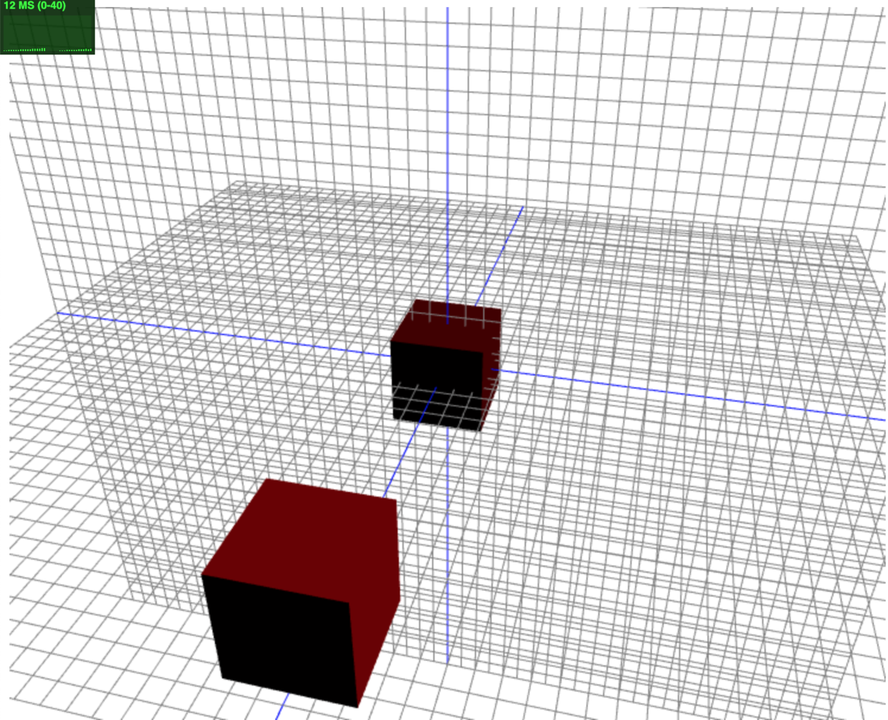
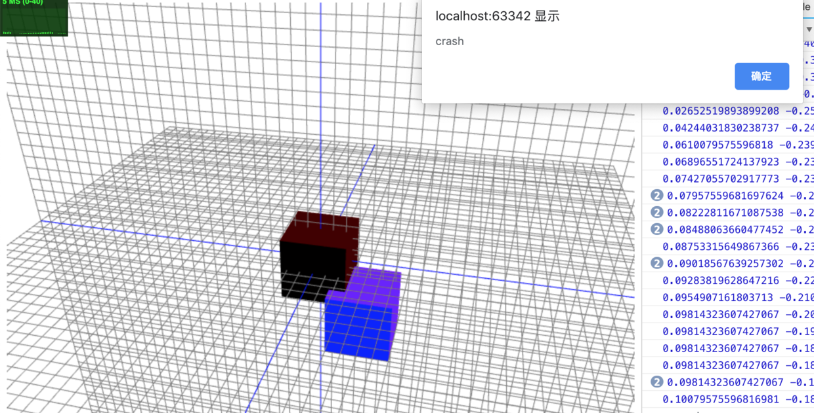
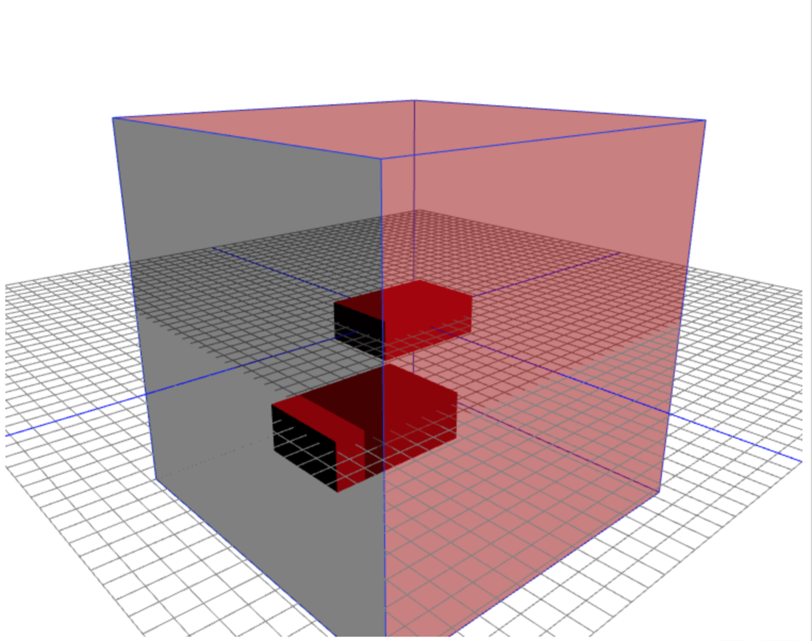

教程：
WebGL中文网教程
three文档
碰撞检测
原理：
以物体的中心为起点，向各个顶点（vertices）发出射线，如果射线与其它的物体相交，则检查最近的一个交点与射线起点间的距离，如果这个距离比射线起点至物体顶点间的距离要小，则说明发生了碰撞。但是，当物体的中心在另一个物体内部时，是不能够检测到碰撞的。而且当两个物体能够互相穿过，且有较大部分重合时，检测效果也不理想。


1 | // 初始化Three |
拖拽优化：
使用three-drag-controller,替代mousemove时间监听1
2
3
4
5
6
7
8
9
10
11
12
13
14
15
16
17
18
19
20
21
22import DragControls from 'three-dragcontrols';
import OrbitControls from 'three-orbitcontrols';
......
function initDragControls() {
// 初始化拖拽控件
var dragControls = new DragControls(meshList, camera, renderer.domElement);
var controls = new OrbitControls(camera, renderer.domElement);
// 鼠标略过事件
dragControls.addEventListener('hoveron', function (event) {
});
// 开始拖拽
dragControls.addEventListener('dragstart', function (event) {
controls.enabled = false;
});
// 拖拽结束
dragControls.addEventListener('dragend', function (event) {
controls.enabled = true;
// crashCheck();
});
}
加入webpack管理，
优化后完整代码：

1 | var THREE = require('three'); |
后期打算添加物理引擎Physijs